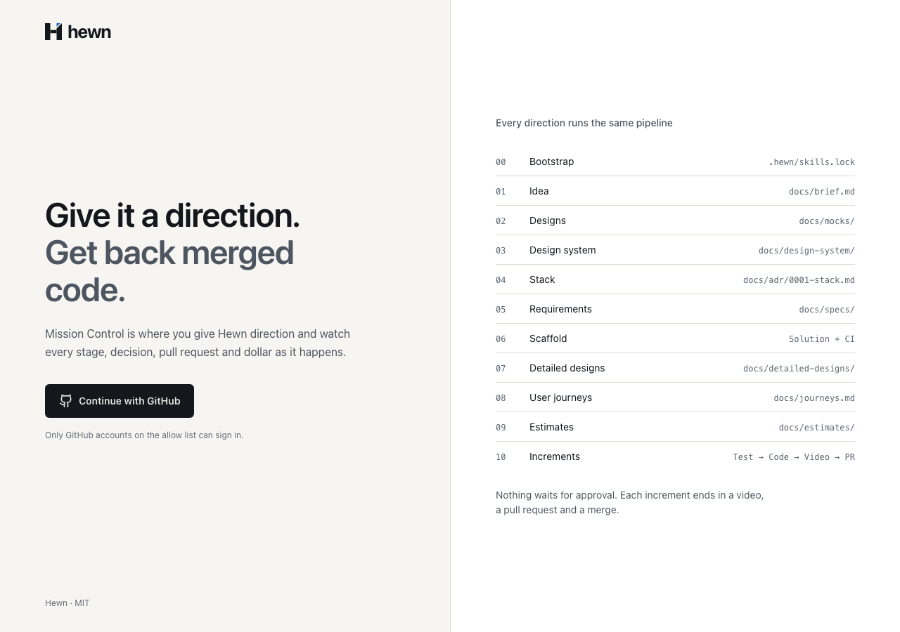
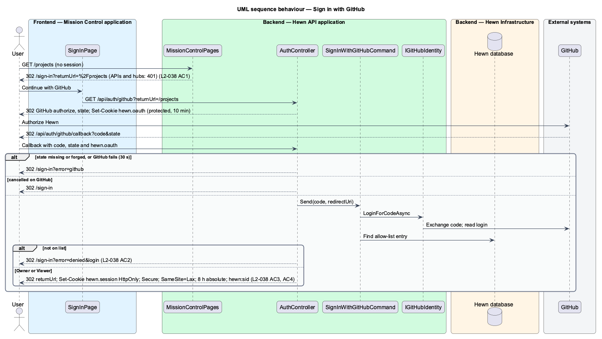
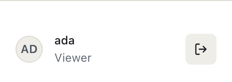
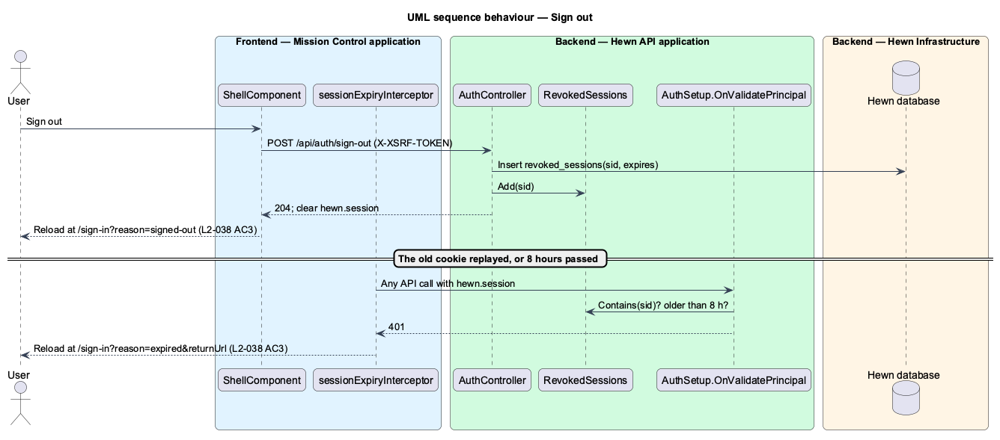
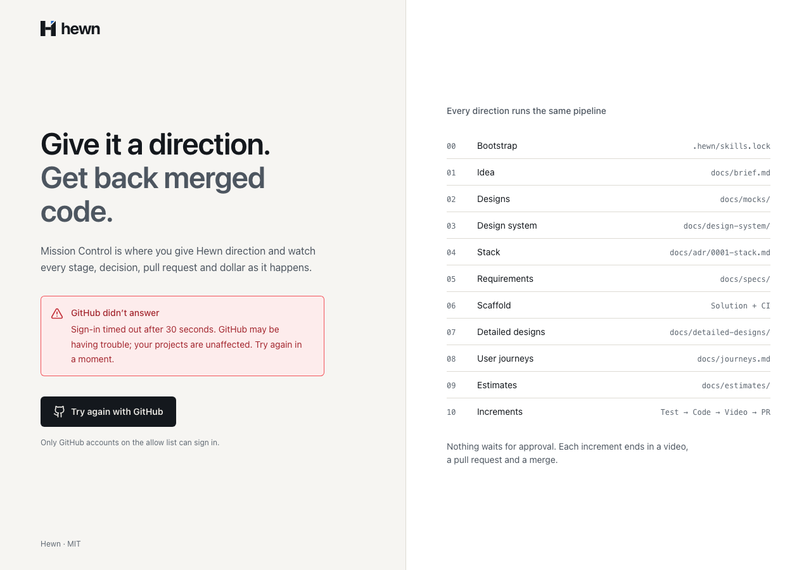
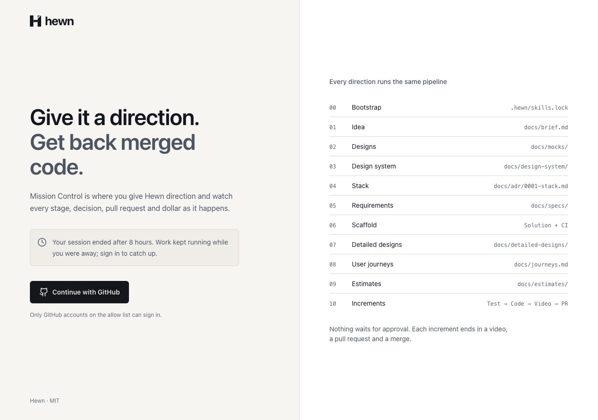
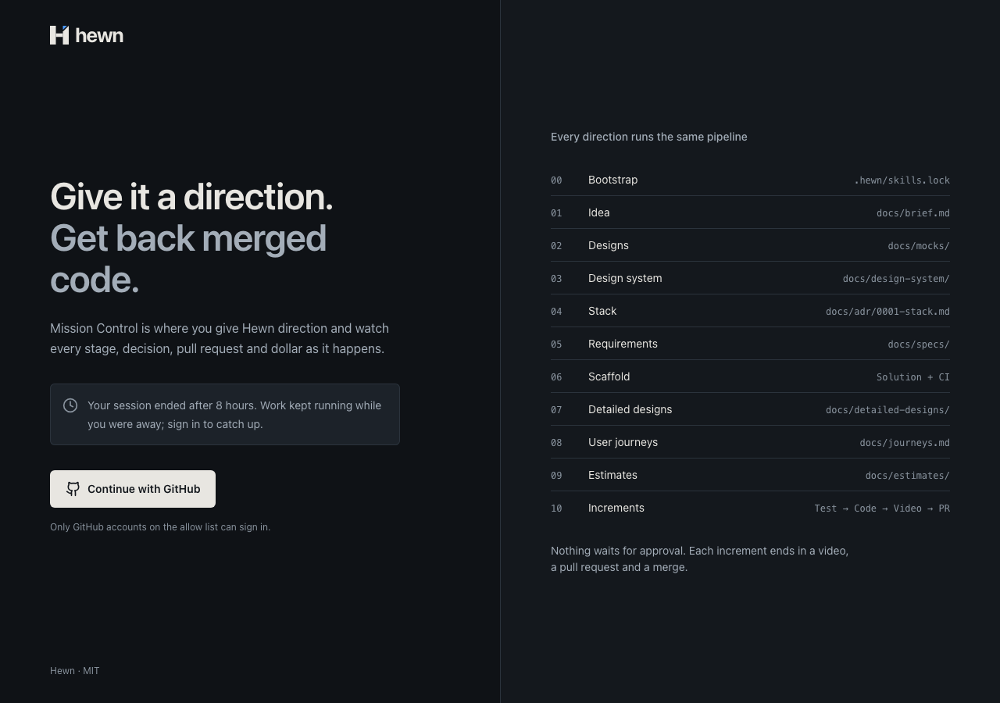
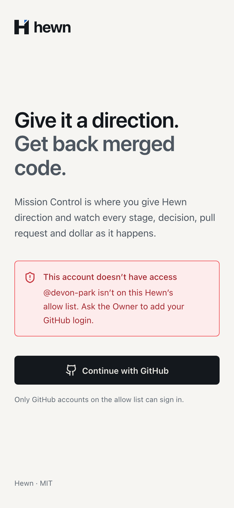

GitHub sign-in for the allow list, sessions that really end, and pages with a strict policy.


try
{
signIn = await mediator.Send(new SignInWithGitHubCommand(code, CallbackUrl), cancellationToken);
}
catch (GitHubException)
{
return Redirect("/sign-in?error=github");
}
if (signIn.Entry is null)
{
return Redirect(QueryHelpers.AddQueryString("/sign-in", new Dictionary<string, string?> { ["error"] = "denied", ["login"] = signIn.Login }));
}
await HttpContext.SignInAsync(CookieAuthenticationDefaults.AuthenticationScheme, AuthSetup.Principal(signIn.Entry), AuthSetup.SessionProperties(clock));
return Redirect(started.Value.ReturnUrl);
export function signInState(params: {
error?: string | null;
login?: string | null;
reason?: string | null;
}): SignInState {
if (params.error === 'denied')
return { kind: 'denied', login: params.login?.trim() || 'This account' };
if (params.error) return { kind: 'error' };
if (params.reason === 'expired') return { kind: 'expired' };
if (params.reason === 'signed-out') return { kind: 'signed-out' };
return { kind: 'default' };
}

private static async Task RefuseSignedOutSessions(CookieValidatePrincipalContext ctx)
{
var sid = ctx.Principal?.FindFirstValue(SessionIdClaim);
var mediator = ctx.HttpContext.RequestServices.GetRequiredService<MediatR.IMediator>();
if (!Guid.TryParse(sid, out var id) || await mediator.Send(new Hewn.Application.Auth.IsSessionRevokedQuery(id), ctx.HttpContext.RequestAborted))
{
ctx.RejectPrincipal();
}
}

export const sessionExpiryInterceptor: HttpInterceptorFn = (request, next) => {
const session = inject(SessionStore);
return next(request).pipe(
tap({
error: (error: unknown) => {
if (error instanceof HttpErrorResponse && error.status === 401 && session.signedIn()) {
session.me.set(null);
location.assign(expiredSignIn(location.pathname + location.search));
}
},
}),
);
};
context.Response.OnStarting(() =>
{
var headers = context.Response.Headers;
headers.XContentTypeOptions = "nosniff";
if (context.Response.ContentType?.StartsWith("text/html", StringComparison.OrdinalIgnoreCase) == true
&& !headers.ContainsKey("Content-Security-Policy"))
{
headers.ContentSecurityPolicy = policy;
headers["Referrer-Policy"] = "same-origin";
}
private const string StylesheetLoader = "this.media='all'";
private static readonly string[] NotPages = ["/api", "/hubs", "/preview", "/health"];
public static string ContentSecurityPolicy(string previewOrigin) => string.Join("; ",
"default-src 'self'",
$"script-src 'self' 'unsafe-hashes' 'sha256-{Convert.ToBase64String(SHA256.HashData(Encoding.UTF8.GetBytes(StylesheetLoader)))}'",
"style-src 'self' 'unsafe-inline'",
"img-src 'self' data: https://avatars.githubusercontent.com",
"font-src 'self' data:",
"connect-src 'self'",
$"frame-src {previewOrigin}",
"frame-ancestors 'self'",
"base-uri 'self'",
"form-action 'self'",
"object-src 'none'");
GET /workers
302 location: http://localhost:5300/sign-in?returnUrl=%2Fworkers
x-content-type-options: nosniff
GET /sign-in
200
content-security-policy: default-src 'self';
script-src 'self' 'unsafe-hashes' 'sha256-MhtPZXr7+LpJUY5qtMutB+qWfQtMaPccfe7QXtCcEYc=';
style-src 'self' 'unsafe-inline';
img-src 'self' data: https://avatars.githubusercontent.com;
font-src 'self' data:;
connect-src 'self';
frame-src http://127.0.0.1:5300;
frame-ancestors 'self';
base-uri 'self';
form-action 'self';
object-src 'none'
x-content-type-options: nosniff
referrer-policy: same-origin
[Fact]
public async Task Signing_out_ends_the_session_even_if_its_cookie_is_replayed()
{
var owner = await _factory.SignInAsync("quinntynebrown", Role.Owner);
var session = owner.CookieHeader();
Assert.Equal(HttpStatusCode.OK, await MeAsync(session));
var signedOut = await owner.PostAsync("/api/auth/sign-out", new { });
Assert.Equal(HttpStatusCode.NoContent, signedOut.StatusCode);
Assert.Equal(HttpStatusCode.Unauthorized, await MeAsync(session));
}
test('a signed-out visit signs in through GitHub and comes back to the page', async ({ page, signInPage }) => {
await page.goto('/workers');
await expect(page).toHaveURL(/\/sign-in\?returnUrl=%2Fworkers$/);
await expect(signInPage.allowListNote).toBeVisible();
await signInPage.continueWithGitHub.click();
await expect(page).toHaveURL(/\/api\/fakes\/github\/login\/oauth\/authorize\?/);
await signInPage.authorizeOnGitHub('ada');
await expect(page).toHaveURL(/\/workers$/);
await expect(page.getByRole('heading', { level: 1, name: 'Workers' })).toBeVisible();
await expect(page.locator('.sidebar__foot')).toContainText('ada');
expect(await signInPage.apiAcceptsSession()).toBe(true);
});
13 new: sign-in, refusal, state, cancel, 8 hours, replay, pages, headers
Sign-in states, return addresses, expiry
6 behaviour, 6 visual, 6 a11y



